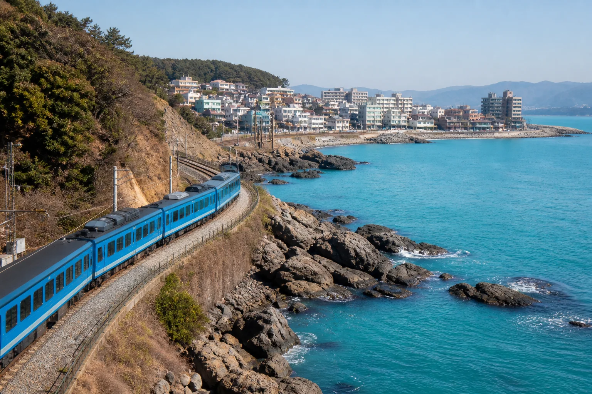
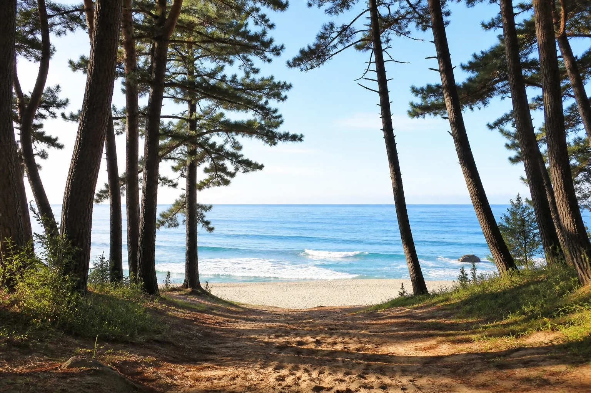
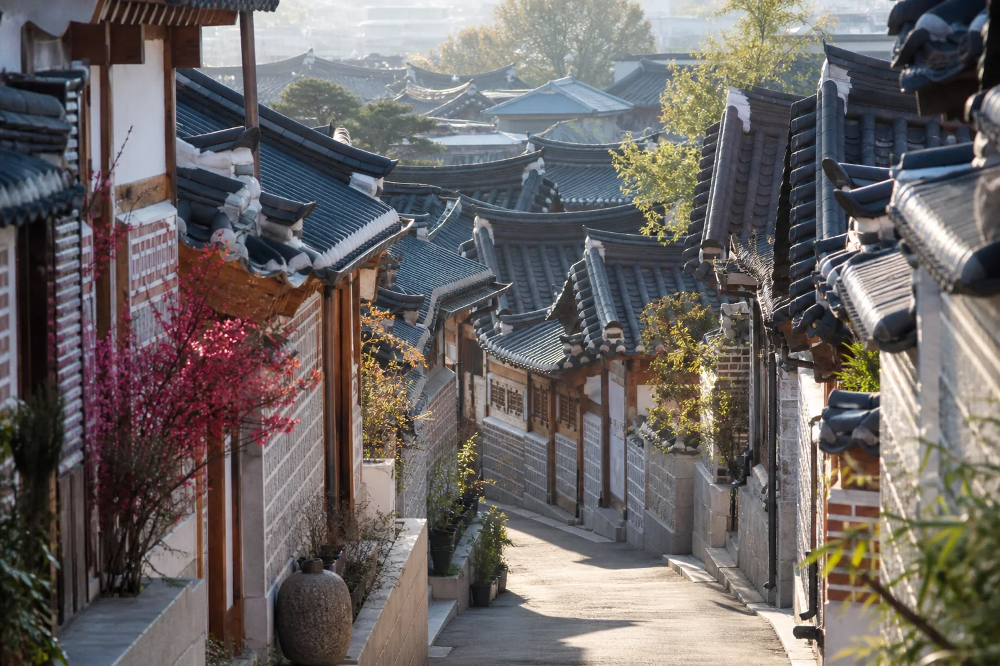
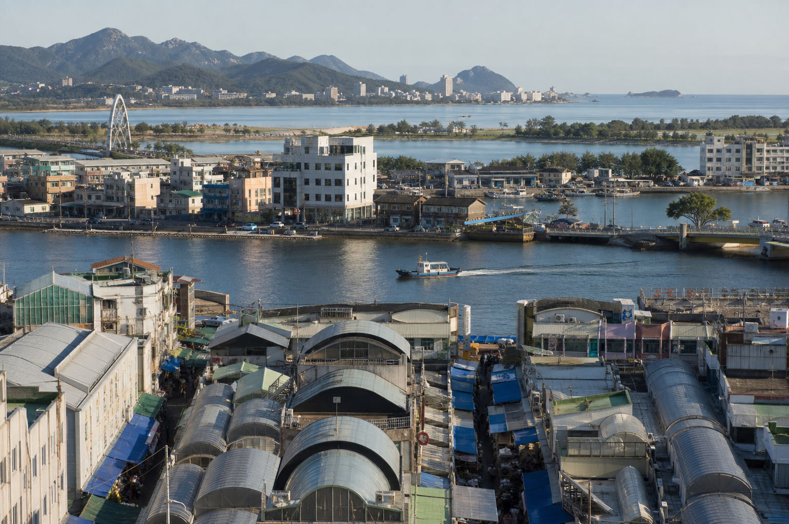
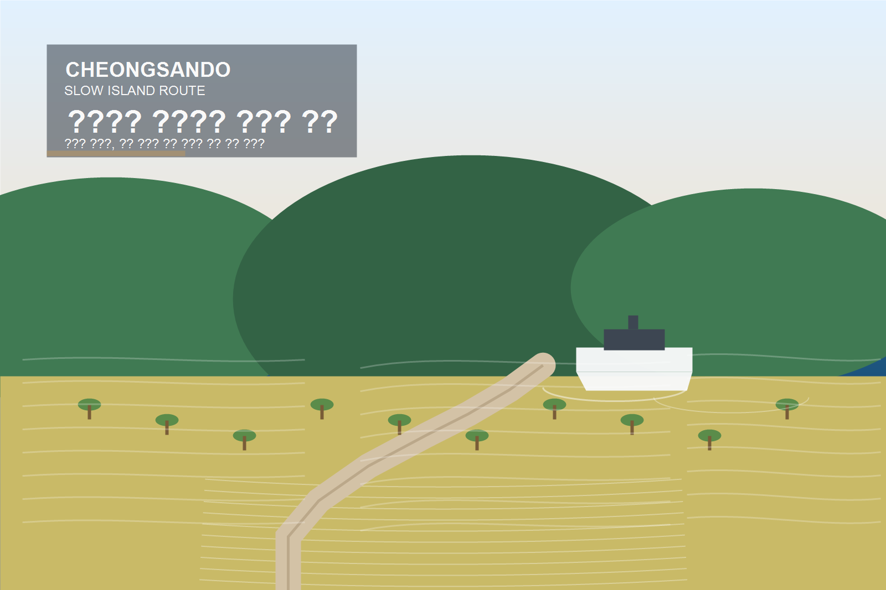
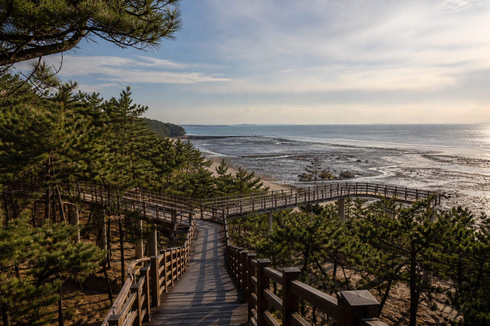
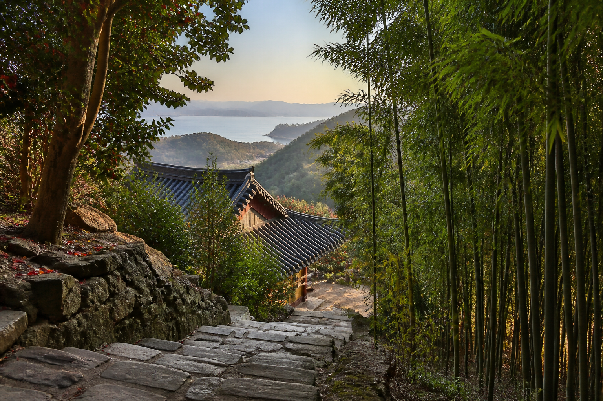
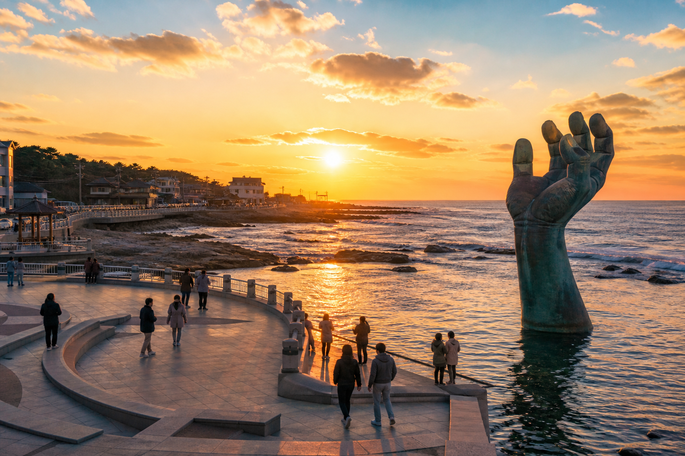
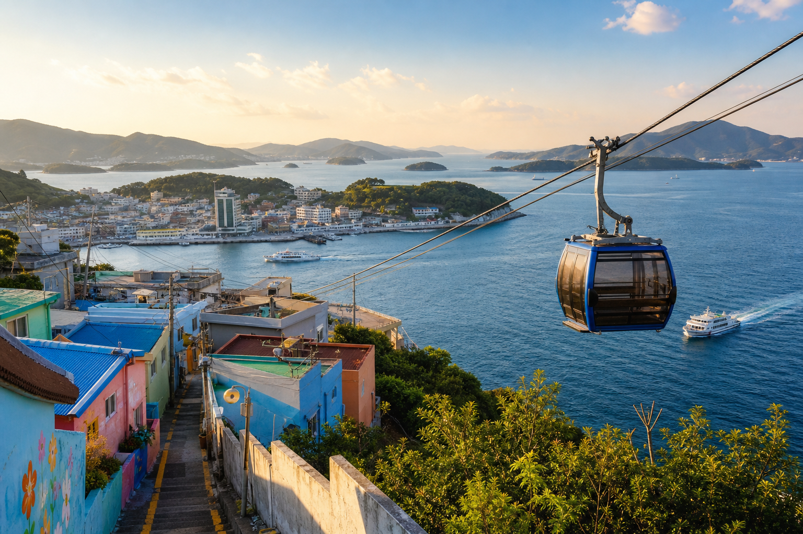

DESTINATION 쨌 BUSAN
遺?? 諛붾떎瑜??곕씪 泥쒖쿇???대룞?섎뒗 ?섎（
?≪젙?먯꽌 泥?궗?ъ? 誘명룷源뚯?. ?댁감? ?곗콉???욎뼱 遺???숈そ ?댁븞???ъ쑀濡?쾶 蹂대뒗 ?ы뻾?낅땲??

媛뺤썝 쨌 媛뺣쫱寃쏀룷??踰덉옟?⑥쓣 ?좎떆 踰쀬뼱???꿸낵 ?대?????踰덉뿉 嫄룸뒗 諛섎굹??肄붿뒪?낅땲??

?꾨턿 쨌 ?꾩＜?쒖삦留덉쓣? ?대Ⅸ ?쒓컙??媛??李⑤텇?⑸땲?? 怨⑤ぉ怨??쒖옣???곌껐???섎（瑜??쒖옉??蹂댁꽭??
媛덈?諛?쓣 湲됲엳 ?듦낵?섏? ?딄퀬 鍮쏆씠 ?щ씪吏???쒓컙???곕씪 嫄룸뒗 ??? ?ㅽ썑 ?ы뻾?낅땲??
?以묎탳?듭쑝濡??쒖옉?먭낵 ?앹젏???ㅻⅤ寃??≪븘 ?뚮떞, ?꾩떆? ????앹궗瑜??뉖뒗 吏㏃? ?ы뻾?낅땲??
영남루 수변공원길, 밀양아리랑시장, 위양지를 공식 안내 기준으로 잇는 밀양 하루 여행.
도담삼봉, 단양강 잔도, 만천하스카이워크, 수양개빛터널을 공식 안내 기준으로 잇는 단양 하루 여행.

시장, 갯배, 실향민 마을, 호수 산책을 한 줄로 잇는 속초 도심 여행.
안면도 자연휴양림, 꽃지해수욕장, 천리포수목원을 한 줄로 잇는 서해안 여행.

완도항과 청산도항, 서편제촬영지, 범바위, 신흥리해수욕장을 공식 안내 기준으로 엮은 섬 여행.
진도대교, 운림산방, 신비의 바닷길, 세방낙조를 공식 안내 기준으로 엮은 남도 섬 여행.
오동도 방파제, 여수해상케이블카, 돌산공원, 향일암을 공식 안내 기준으로 엮은 남해안 여행.
고려궁지, 소창체험관, 전등사, 동막해변을 한 호흡으로 이어 읽는 강화 여행.

국립생태원, 국립해양생물자원관, 장항스카이워크를 한 줄로 읽는 서천 여행.
광한루원, 남원예촌, 요천생태습지공원과 남원다움관을 한 호흡으로 이어 읽는 남원 여행.
독일마을의 언덕길과 다랭이마을의 계단논, 물미해안도로를 하루로 이어 읽는 남해 여행.
진주성, 남강, 유등전시관을 하루에 엮어 걷는 진주 1일 도보 코스.

?ㅼ궛珥덈떦, 諛깅젴?? 留뚮뜒???꿸만, 媛뺤쭊???먯떖, ?ㅻ궡 ??덇퉴吏 ???먮쫫?쇰줈 臾띠? 媛뺤쭊 1??肄붿뒪.
怨듭궛?? 臾대졊?뺣쫱怨??뺣쫱?? ?쒕?泥? 怨듭＜?쒖삦留덉쓣, 援?┰怨듭＜諛뺣Ъ愿?????먮쫫?쇰줈 臾띠? 怨듭＜ 1??肄붿뒪.
?섎┝吏, 移섏쑀?꿸만, 泥?뭾臾명솕?좎궛?⑥?, 泥?뭾?몃컲耳?대툝移대? ???먮쫫?쇰줈 臾띠? ?쒖쿇 1??肄붿뒪.
沅곷궓吏, 諛깆젣臾명솕?⑥?, ?댁꽕, ?щ퉬濡??댁감, 諛깅쭏媛??섏긽愿愿묒쓣 ???먮쫫?쇰줈 臾띠? 諛깆젣 ?ы뻾.
강변 산책과 시장 점심, 위양지 저녁 산책을 한 줄로 잇는 밀양 1일 코스.
?ㅼ궛珥덈떦, 留뚮뜒???ㅼ넄湲? 諛깅젴?? 李?臾명솕, 媛뺤쭊???먯떖?????먮쫫?쇰줈 臾띠? ?⑤룄 ?곗콉 肄붿뒪.
?낅걹, ??μ궗, ?먯떖, ?以묎탳?? 鍮???덇퉴吏 ??踰덉뿉 ?뺣━???대궓 1??肄붿뒪?낅땲??
?곗옄???ъ같怨??쒖썝, ?좊퉬珥뚯쓣 ??踰덉뿉 臾띠뼱 嫄룸뒗 ?ㅼ쟾???곸＜ 1??肄붿뒪?낅땲?? ?щ쫫 ?숈꽑怨?援먰넻, ?앹궗, 鍮???덇퉴吏 ?④퍡 ?뺣━?덉뒿?덈떎.
?섏썝?? ?붿꽦?됯턿, ?됰━?④만, ?붿꽦?댁감, ?붾떖臾몄떆?μ쓣 ???먮쫫?쇰줈 臾띠? ?꾩떖???ы뻾.
紐⑺룷?? 洹쇰???궗愿 1쨌2愿, ?좊떖?? ?쇳븰?꾨? ???먮쫫?쇰줈 ?댁뼱 ?쎈뒗 ?꾩떖 ?곗콉 肄붿뒪.
?由됱썝, ?⑸━?④만, 泥⑥꽦?, ?붿젙援먯? ?숆턿怨??붿?瑜???諛⑺뼢?쇰줈 ?뉖뒗 ?쇨컙 ?곗콉.
?쒗솕媛?援???뺤썝, ?쒗솕猷? ??뺤븫怨듭썝????踰덉뿉 臾띠뼱 嫄룰퀬 ?щ뒗 ?쒖꽌瑜?癒쇱? ?뺣━??肄붿뒪.

?쇱텧 愿묒옣, 洹쇰? 媛?κ굅由? ??뎄? ?쒖옣????諛⑺뼢?쇰줈 ?댁뼱 嫄룸뒗 ?숉빐??肄붿뒪.
??? 媛뺣?, 媛濡쒖닔湲몄쓣 ??諛⑺뼢?쇰줈 臾띠뼱 嫄룸뒗 ?댁뼇???먮┛ ?숈꽑.

?몃뜒??踰쏀솕, 諛붾떎 ?꾨쭩, ?꾪넻?쒖옣, ?댁??곕꼸??李⑤?濡??곌껐?섎뒗 ?꾩떖???ы뻾?낅땲??
臾쇰룎??吏?뺢낵 ?좊꽕?ㅼ퐫 ?멸퀎?좎궛 ?쒖썝???④퍡 蹂대뒗, ?먮┛ 蹂댄뻾 以묒떖???덈룞 ?ы뻾?낅땲??
?숈そ怨??쒖そ???쒕궇???ㅺ?湲곕낫????吏??뿉 癒몃Ъ ??蹂댁씠??留덉쓣???띻꼍怨??꾩떎?곸씤 ?대룞 湲곗?.
?댁븞 ?꾩껜瑜?臾대━?섍쾶 嫄룹? ?딄퀬 ?ш뎄, ?곗콉怨??щ뒗 ?쒓컙????諛⑺뼢?쇰줈 ?곌껐?섎뒗 諛섎굹??肄붿뒪.
?뚭퀬, 諛붾엺怨??꾩옣 ?듭젣瑜??④퍡 ?뺤씤?섍퀬 ?ы뻾 ?뱀씪 諛붾떎 ?쇱젙??議곗젙?섎뒗 諛⑸쾿.
?대쾲 ?ы뻾?먯꽌 ?먰븯???λ㈃??癒쇱? 怨⑤씪蹂댁꽭??
?ы뻾吏 14怨녹쓣 ?쒖떆?섍퀬 ?덉뒿?덈떎.
?대??댁감, ?ш뎄 ?곗콉, ??? ?먯떖???곌껐?섎뒗 ?꾩떆 諛붾떎 ?ы뻾.
沅곴텗 ?댁옣怨??ㅻ옒??怨⑤ぉ???뉖뒗 ?以묎탳??以묒떖?????肄붿뒪.
李⑤웾 ?대룞??以꾩씠怨???留덉쓣???ㅻ옒 癒몃Т???먮┛ ?쒖＜ ?ы뻾.
?뚮굹臾?洹몃뒛怨??숉빐???섑룊?좎쓣 踰덇컝??留뚮굹??媛踰쇱슫 嫄룰린.
?대Ⅸ 怨⑤ぉ ?곗콉 ???⑤??쒖옣源뚯? ?댁뼱吏??留쏄낵 嫄댁텞???섎（.
臾쇰븣? ?쇰ぐ ?쒓컙???④퍡 ?뺤씤?댁빞 ?쒕?濡?留뚮궇 ???덈뒗 ?띻꼍.
媛뺢낵 ?쒖썝???④퍡 留뚮뱶???덈룞???먮┛ ?섎（ ?ы뻾.
?몃뜒怨??쒖옣, ?꾨쭩怨??댁??곕꼸???뉖뒗 ?듭쁺 ?꾩떖???섎（ 肄붿뒪.
?由됱썝怨??⑸━?④만, 泥⑥꽦?, ?붿젙援? ?숆턿怨??붿?瑜?李⑤?濡??뉖뒗 諛??곗콉.
?꾩떖???뺤썝, 媛뺣? ?꾧컖, ?댁븞 ?덈꼍????踰덉뿉 臾띠뼱 ?쎈뒗 ?몄궛 ?섎（ ?숈꽑.
紐⑺룷?? 洹쇰???궗愿, ?좊떖?? ?쇳븰?꾨? 李⑤?濡??뉖뒗 ??뎄?꾩떆 ?곗콉???섎（.
?섏썝?? ?붿꽦?됯턿, ?됰━?④만, ?곕Т?, ?붾떖臾몄떆?μ쓣 ??諛⑺뼢?쇰줈 ?뉖뒗 ?꾩떆???ы뻾.
沅곷궓吏, 諛깆젣臾명솕?⑥?, ?щ퉬濡??댁감, 諛깅쭏媛??섏긽愿愿묒쓣 李⑤?濡?臾띕뒗 遺?ы삎 諛깆젣 ?ы뻾.
?꾩옱 ?좎뵪瑜??뺤씤?섍퀬 ?덉뒿?덈떎.
?좎뵪??異쒕컻 以鍮꾨? ?꾪븳 李멸퀬 ?뺣낫?낅땲?? 湲곗긽?밸낫? ?꾩옣 ?덈궡瑜??④퍡 ?뺤씤?섏꽭??
?꾧뎅 二쇱슂 ?대????꾩튂, ?꾩옱 ?좎뵪, ?뚭퀬, ?섏삩怨?二쇰? ?ы뻾吏瑜?異쒕컻 ?꾩뿉 ?뺤씤?⑸땲??
諛붾떎?ы뻾 ?닿린 ??/strong>媛怨??띠? ?μ냼蹂대떎 ?ㅼ젣 ?대룞 ?숈꽑??癒쇱? ?뺥븯硫?吏㏃? ?ы뻾????諛붾튌吏묐땲??
湲곗삩留?蹂댁? 留먭퀬 媛뺤닔?? ?쒓컙?띿냽怨???吏??쒓컖???④퍡 ?뺤씤?섏꽭??
?대Т?? ?낆옣 留덇컧, 二쇱감? ?以묎탳??留됱감??異쒕컻 吏곸쟾??怨듭떇 ?덈궡濡??뺤씤?⑸땲??
?ъ쭊 ???μ쑝濡??앸굹??紐낆냼蹂대떎 嫄룸뒗 ?쒓컙, ?щ뒗 ?μ냼, ?대룞 諛⑸쾿???먯뿰?ㅻ읇寃??댁뼱吏???ы뻾???곗꽑?⑸땲?? ?뚭컻?섎뒗 ?숈꽑? 吏곸젒 ?ы뻾 怨꾪쉷???몄슱 ??寃?좏븷 ???덈룄濡??꾩튂? ?뚯슂 ?먮쫫???④퍡 ?ㅻ챸?⑸땲??
?댁쁺 ?쒓컙怨?援먰넻?몄? ?щ씪吏????덉뒿?덈떎. ?ы뻾 ??吏?먯껜쨌愿愿묒?쨌湲곗긽泥?쓽 理쒖떊 怨듭떇 ?덈궡瑜??뺤씤?섍퀬, ?좎뵪媛 醫뗭? ?딆쓣 ?뚮뒗 ?쇱젙??以꾩씠嫄곕굹 ?ㅻ궡 ?숈꽑?쇰줈 諛붽씀?몄슂.